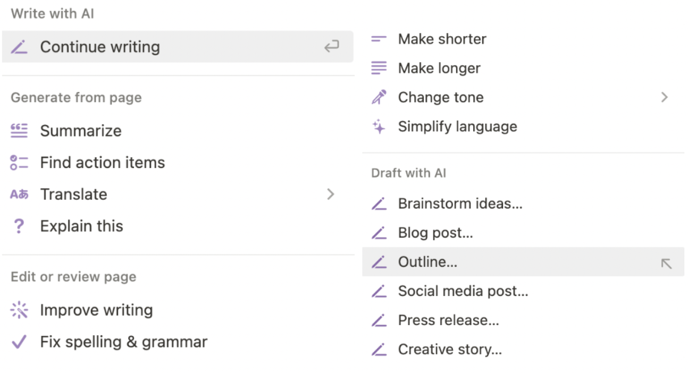
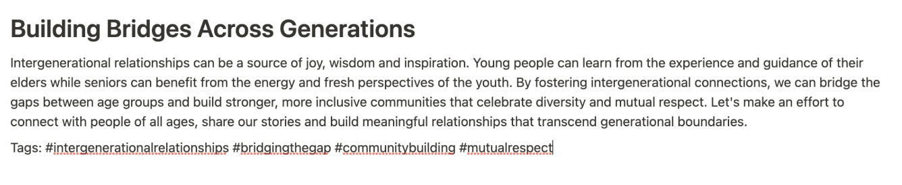

Please feel free to read my digital tool review.
Is Notion the new AI?
Notion has been at the heart of many of my productivity tasks for a number of years now. Therefore, as an avid user, I was excited to hear that there will be a new update to the platform– Notion AI. As many of you guys have heard, Notion is a workspace that combines notetaking, to-do lists, calendars, habit trackers, and journaling into one endless notebook. And according to Notion, the addition of Notion AI will support users in their experience by writing, editing, brainstorming, summarizing, and more.
Now, if we just list a bunch of verbs, it’s hard to imagine it being applicable to our own life so I decided to test it out and see how a fellow student and entrepreneur could take advantage of it.
To activate the AI, all you have to do is press space on the keyboard and then you will be automatically prompted to this dropdown.
Since I am working on a research paper right now, I think that the summarize tool will be really helpful to create a rough draft of my abstract. This will help condense the information without leaving out the important elements of my research paper since I sometimes struggle with summarizing my thoughts into shorter words. You can even specify whether you want AI to summarize it into 500 words or a paragraph! Another advantage I’ve noticed is that compared to Chat GPT, Notion AI offers features to improve writing and fix spelling and grammar. As a student, I felt like this was a smart idea to combine both the benefits of Grammarly and Chat GPT.
I also think that as an entrepreneur whose venture requires a lot of video editing, the translation option would be really helpful for creating subtitles in different languages. This would obviously attract a wider audience, but the only drawback would be that AI wouldn’t be able to properly understand the inside jokes or cultural context language so some parts of the translation would be in broken language. As a start-up entrepreneur, I need to be both a CEO and marketing manager at the same time so the social media post brainstorming would be really helpful for generating post ideas and captions. I tried this with the keyword “generate social media posts for intergenerational relationship” and Notion gave me this.
I would honestly use this for one of my posts and I feel like the more specific the keywords are, the better the captions could turn out to be!
From reading a bunch of articles on Notion AI, I’ve noticed that they really tried to emphasize treating the artificial intelligence tool as a partner or teammate. And even with my limited week experience with Notion AI, it has honestly been so helpful, and I really treated it as my partner or teammate. If I make it a habit to brainstorm or edit with AI, it could shorten my tedious work so that I could spend it doing something more productive. I recommend this tool to someone who is already using Notion as their primary productivity tool since the process of getting used to the Notion interface could take a longer time than actually utilizing Notion AI. But if you already are on Notion, go ahead and test Notion AI yourself! It’s perfect for anyone–student or worker.
Click to read more articles from our class!